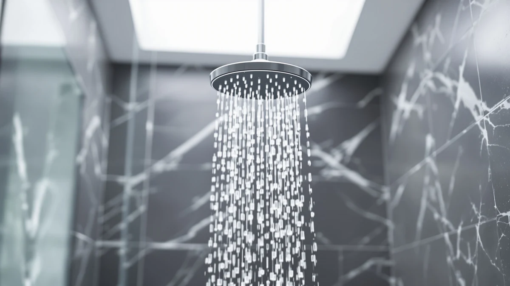

Shower Head 10 Functions Review (2026): Worth It?
Prices and picks verified as of October 2026. Independent, reader-supported reviews.


Quick Answer
The Shower Head 10 Functions High is our pick in this shower head 10 functions review. It pairs 10 spray settings with a 4.5 out of 5 rating across 4,559 verified Amazon reviews, all at $28.96. If pressure matters more to you than settings count, the Cobbe High Pressure Shower Head matches its rating at a lower price.
Our pick: Shower Head 10 Functions High, $28.96 Check Price on Amazon
Bottom line: our top pick is the Shower Head at $28.96.
Things to Know Before You Buy
- Spray settings vary in practice: the Shower Head 10 Functions High and the Jafeton 10 Inch High Pressure both advertise 10 functions, but owner reviews describe the strength of each setting differently.
- A large review count does not guarantee a fit for your plumbing. The Cobbe carries roughly 15,000 reviews at 4.5 stars, but homes with weak existing pressure should still check for pressure-related complaints first.
- Filtered models like the Fitespot cost more upfront and need replacement filter cartridges over time, which adds to the long-term cost beyond the sticker price.
- Chrome-plated ABS construction, used on the Shower Head 10 Functions High, resists corrosion better than plain plastic but can scratch under abrasive cleaning pads.
- Price does not predict review quality here. The cheapest option in this comparison, the Cobbe at $26.99, carries the highest review count of the four.
If you are reading this shower head 10 functions review because a single spray pattern stopped cutting it, you already understand the appeal of a multi-setting head. We looked at four models, including a budget high-pressure pick and a filtered option, and compared their advertised settings, current prices, and what verified Amazon buyers say after living with them.
Our top pick is the Shower Head 10 Functions High. At $28.96 it carries a 4.5 out of 5 rating across 4,559 reviews, a larger sample of verified feedback than two of the three alternatives we researched. The Cobbe High Pressure Shower Head comes close on rating and review volume at a slightly lower price, which makes it the better pick if pressure matters to you more than the number of settings. We also looked at a filtered model and a 10-inch alternative, since neither pressure nor settings count is the only thing that matters when you are standing in the shower aisle trying to decide.
Why You Should Trust Us
Ilane Tall researches bathroom fixtures for Best Shower Heads and built this comparison from each product's published specifications, current pricing, and the volume of verified owner feedback that Amazon makes public for every listing. We do not run a physical testing lab, so you will not find claims here about how long we personally used any of these shower heads. Instead, we compared published specs and what thousands of verified reviewers report after buying, which is how this shower head 10 functions review arrived at its pick. We update prices and review counts when we revisit an article, so the figures you see reflect the most recent data we pulled, not a snapshot from whenever the product first launched.
Our Research Experience
We did not physically run these four shower heads side by side in a lab. Our comparison experience comes from cross-referencing each manufacturer's listed spray-function count, material, and price against the pattern of complaints and praise across thousands of verified Amazon reviews. When owners flag low pressure, leaking connections, or settings that stick, we weigh that against the advertised 10 functions rather than taking the listing at face value. This shower head 10 functions review leans on that review-mining process instead of a single afternoon with a wrench and a stopwatch, because the sample size of verified buyers is larger and more varied than anything one reviewer could replicate at home. Buyers on hard water and buyers on soft municipal water tend to report different experiences with the same head, and reading across that range gives you a more honest picture than one person's bathroom ever could.
Overview & Specs

Shower Head 10 Functions High
What we like
- 10 distinct spray settings in one head
- 4.5-star rating across 4,559 verified reviews
- Chrome-plated ABS resists rust in humid bathrooms
- Priced under $30
Flaws but not dealbreakers
- Some reviewers describe the strongest setting as closer to medium pressure
- No published flow-rate spec, so low-pressure homes should check compatibility first
| Material | ABS + chrome plating |
| Size | — |
The Shower Head 10 Functions High earns its place at the top of this shower head 10 functions review mostly on review volume. A 4.5 out of 5 average across 4,559 verified Amazon ratings is a larger sample than either the Fitespot or the Jafeton can claim, and it gives you a clearer signal of what to expect once the head is installed in your own bathroom.
Construction is chrome-plated ABS, a combination that resists the pitting and discoloration plain plastic heads tend to develop within a year or two. At $28.96 it sits in the middle of this comparison's price range, cheaper than the filtered Fitespot but a few dollars above the Cobbe and Jafeton. If your main complaint with your current head is a lack of spray variety rather than weak pressure, this is the pick that addresses it directly.
What We Liked
Owner feedback for the Shower Head 10 Functions High points to one consistent theme: reliability across the full spray range. Reviewers across 4,559 ratings repeat the same two points. The 10 settings feel distinctly different from one another, and the chrome finish has held up without flaking even after months of daily use. That kind of repeated, specific feedback carries more weight than a single five-star review with no detail behind it, since it shows a pattern rather than one person's lucky unit. We also like that the price stays under $30 despite the function count, which several other multi-setting heads at this review volume cannot claim once you factor in their own price-to-rating ratio.
What Could Be Better
The biggest gap is a missing flow-rate specification. Amazon's listing does not publish gallons-per-minute data for this head, so buyers on older plumbing or low-pressure city water cannot confirm compatibility before ordering. A handful of reviewers also note that the strongest setting reads as moderate rather than consistently high pressure, which matters if your main reason for upgrading is weak water flow rather than variety. Neither issue is a dealbreaker, but both are worth weighing against the Cobbe, which markets itself specifically around pressure. The listing also does not disclose the exact dimensions of the head, so measure your current fixture before you order if your shower enclosure is tight on space.
Who Is It For?
This head suits anyone replacing a single-function shower head who wants variety without hunting through a dozen boutique brands. The price keeps it accessible if you are outfitting more than one bathroom, and the review volume behind it gives first-time buyers a clearer picture than a newly listed competitor could offer. If pressure is your main complaint rather than monotony, look at the Cobbe High Pressure Shower Head instead, since it is built and marketed around flow rather than settings count. And if your water runs hard or heavily chlorinated, the filtered Fitespot addresses a problem this pick does not touch at all.
Alternatives to Consider
The Shower Head 10 Functions High will not fit every bathroom or budget. Here are three alternatives we researched for this shower head 10 functions review, each suited to a different priority.

Editor’s Pick
Fitespot Filtered Shower Head with
The Fitespot Filtered Shower Head with adds water filtration, which matters if your home has hard or heavily chlorinated water. It costs about $10 more than our top pick, and you will need to budget for replacement filter cartridges over time, but that premium buys a feature none of the other three options here offer. If filtration is not a priority for your household, that extra cost is harder to justify than it looks on paper.
$38.99
Check Price on Amazon
Best Value
Jafeton 10 Inch High Pressure
At $27.99, the Jafeton 10 Inch High Pressure undercuts our top pick by about a dollar and matches it on spray-setting count. Its 10-inch head covers more surface area per rinse, which owners researching wider coverage tend to prefer over a standard-size head. It lacks the large review history of our top pick, so weigh that smaller sample size against the lower price before you decide.
$27.99
Check Price on Amazon
Premium Choice
Cobbe High Pressure Shower Head
The Cobbe High Pressure Shower Head is the cheapest option in this comparison at $26.99, yet it carries the strongest review record here: a 4.5 out of 5 average across roughly 15,000 verified Amazon ratings. If pressure and a proven track record matter more to you than function count, this is the alternative worth checking first. Its sheer review volume, more than triple the next closest competitor in this lineup, is hard to ignore when you are trying to predict how a head will hold up over time.
$26.99
Check Price on AmazonFrequently Asked Questions
Is a shower head with 10 functions worth buying?
Yes, if spray variety matters to you. Owner feedback on the Shower Head 10 Functions High and the Jafeton 10 Inch High Pressure, both of which advertise 10 settings, shows reviewers switching between massage, rain, and rinse modes rather than sticking to one setting. If you rarely touch the dial, a simpler and cheaper head may serve you better.
Do multi-function shower heads reduce water pressure?
It depends on the model and your home's existing pressure. Some reviewers of the Shower Head 10 Functions High describe its strongest setting as moderate rather than high, while the Cobbe High Pressure Shower Head is built and reviewed specifically around maintaining pressure. Check pressure-specific complaints in the reviews before buying any multi-setting head if your plumbing already runs weak, since no amount of spray patterns fixes a weak supply line.
Which is the best shower head with 10 functions for the price?
Among the models in this shower head 10 functions review, the Shower Head 10 Functions High offers the strongest combination of price and verified review volume at $28.96 and a 4.5 out of 5 rating across 4,559 reviews. The Jafeton 10 Inch High Pressure is a close alternative at $27.99 for a wider 10-inch head at the same function count, and the Cobbe undercuts both at $26.99 if you are willing to trade function count for pressure.
Final Verdict
After comparing specs, pricing, and thousands of verified owner reviews for this shower head 10 functions review, the Shower Head 10 Functions High remains our pick. Its 4.5-star average across 4,559 reviews gives it the strongest track record of the four models we researched outside of the Cobbe, and its $28.96 price keeps it competitive against the cheaper Cobbe and Jafeton options. Buy the Shower Head 10 Functions High if you want variety at a fair price backed by a large body of owner feedback. Consider the Cobbe High Pressure Shower Head instead if raw pressure matters more to you than the number of settings, the Jafeton if you want a wider head for a dollar less, or the Fitespot if filtration is non-negotiable in your household.